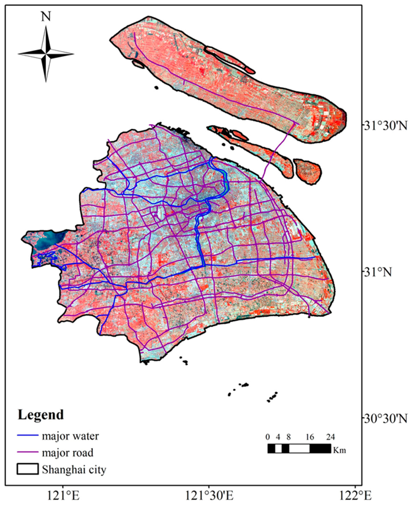
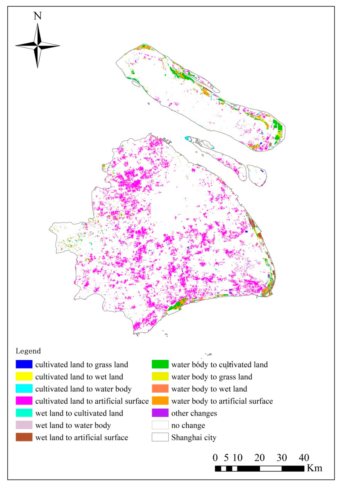
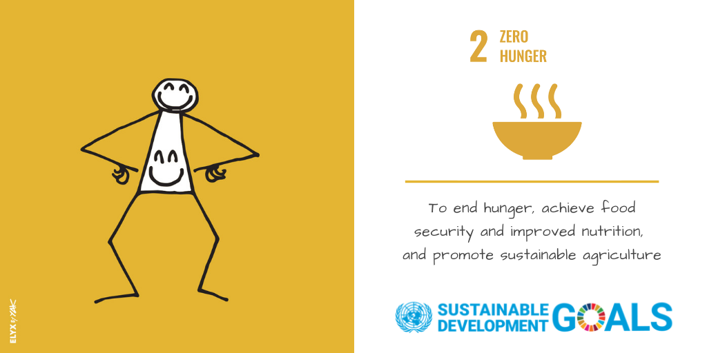
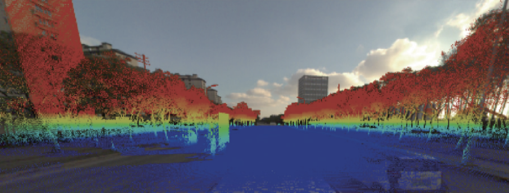
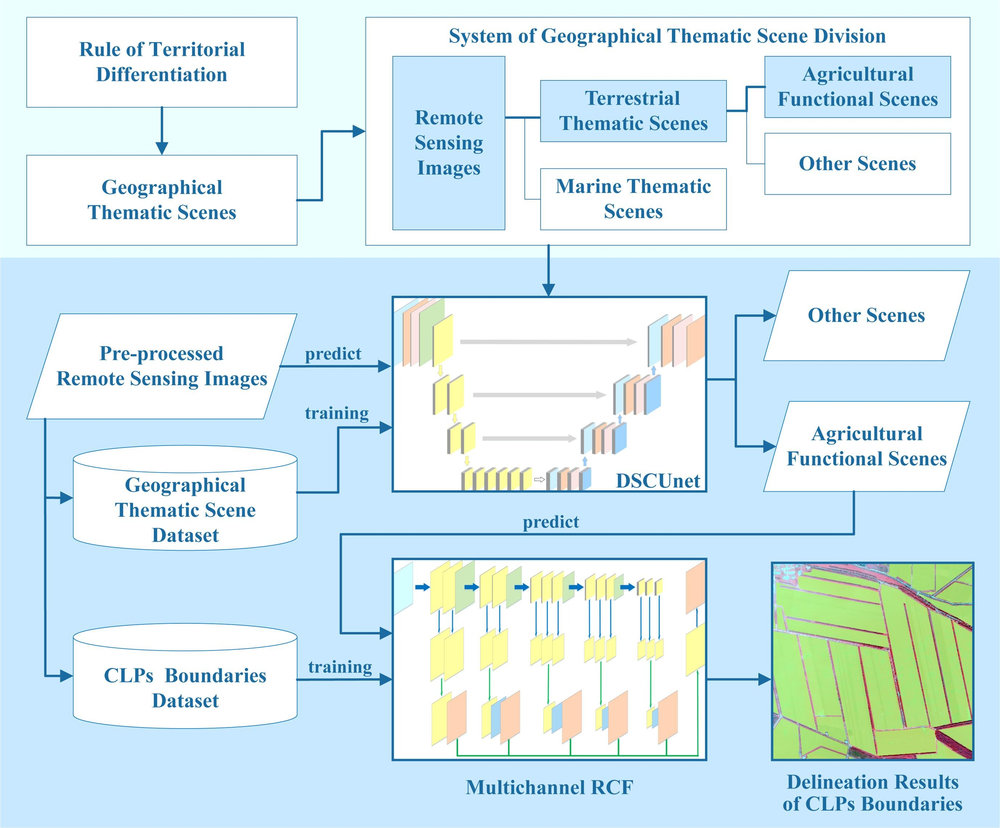

4 Week 4 - The Policy of ‘Arable Land Minimum’ in Shanghai
Below is a mind map showing the outline of my learning diary for this week. Following this I will complete the learning diary for this week around the points in the outline.

Mind map of learning diary outline for this week
4.1 4.1 Summary
4.1.1 4.1.1 Metropolitan - Shanghai
Shanghai is one of the largest cities in China and with a population of over 24 million, making it one of the most populous cities in the world. As the economic, transportation, technological and cultural centre of China, Shanghai is known for its unique metropolitan look and rapid modern development. The city is not only one of the world’s financial centres, but also demonstrates a perfect blend of tradition and modernity with its historical landmarks such as the Bund and the Shanghai Tower, which boasts one of the world’s tallest buildings.
Shanghai City View Image (source: Baidu)
Below is a map of the city of Shanghai, showing the city boundaries, major roads and river networks, and the geographic location of the city:

Shanghai Map (Pan et al., 2020)
As cities grow, cultivated land is occupied by artificial land, and food security and sustainable development are challenged. The following figure shows the change of land cover in Shanghai from 2000 to 2011 (Pan et al., 2020). In the figure below, we will find that as the city of Shanghai develops, the area of land changed from arable land to other land use types, especially artificial land, is much larger than the area of other land types changed to cultivated land. In short, arable land is decreasing rapidly. We needed a policy to address this issue.

‘Land cover change map for Shanghai from 2000 to 2011’ (Pan et al., 2020)
4.1.2 4.1.2 Policy
The State Council, the highest organ of state administration in the People’s Republic of China, has issued documents containing policy ‘Arable Land Minimum’ related to the protection of arable land, also known as the red line policy for arable land, which is aimed at solving the problem of basic arable land being occupied by artificial land use as cities are developing:
“National General Land Use Planning Outline (2006-2020)”:
By 2010 and 2020, the total arable land area in Chinese Mainland is to be maintained at 121.2 million hectares (18.18 billion mu) and 120.33 million hectares (18.05 billion mu), respectively.
Ensure that the area of basic farmland does not decrease from 104 million hectares (15.6 billion mu) during the planning period, with an improvement in quality.
Supplement 63,000 hectares (945,000 mu) of arable land through land consolidation by 2020 and 182,000 hectares (2.73 million mu).
“Adjustment Plan for the National General Land Use Planning Outline (2006-2020)” (2016):
By 2020, the total arable land area in Chinese Mainland is targeted to be 18.65 billion mu.
Ensure that the national basic farmland area of 15.46 billion mu does not decrease during the planning period, with an improvement in quality.
The policy related to arable land in the above policy documents is uniformly referred to as ‘Arable Land Minimum’.
The ‘three zones and three lines’ policy (“three zones” refers to three types of national land space, namely, urban space, agricultural space, and ecological space; the “three lines” corresponds to the three control lines of urban development boundaries, permanent basic farmland, and ecological protection red lines drawn in urban space, agricultural space, and ecological space, respectively) issued by the State Council at the end of 2019 related to the policy of ‘Arable Land Minimum’. The guidance for implementation is being used today, which emphasises:
Implement permanent special protection for arable land, establishing a permanent basic farmland system.
Rectify issues with already designated permanent basic farmland to ensure stability in area, quality, and layout.
The above is a summary of policy ‘Arable Land Minimum’ also known as the red line policy for arable land. Overall, the policy emphasises the protection of arable land and gives targets such as a bottom line for the area of arable land. For Shanghai, the Shanghai Municipal People’s Government has issued “Several Opinions on Comprehensively Promoting High-Quality Utilisation of Land Resources in the City”, in which the ‘Arable Land Minimum’ policy of arable land protection is also emphasised. In the implementation of this policy, it is essential to monitor and identify agricultural land, and this is relevant to the application of remotely sensing that we have learnt.
4.1.3 4.1.3 How this links to global agendas / goals
The Chinese ‘Arable Land Minimum’ policy for arable land refers to maintaining the total amount of arable land at no less than a bottom-line standard to ensure national food security and sustainable development. This policy is closely linked to global agendas and goals, and in particular responds to the United Nations Sustainable Development Goals (SDGs).
- The Chinese ‘Arable Land Minimum’ Policy, by ensuring a minimum amount of arable land, directly supports SDG 2’s goal to end hunger and enhance food security. This policy prevents the overdevelopment of farmland, safeguarding the basic resources for food production, thereby promoting stable food supply and sustainable agricultural development.

‘Zero Hunger’ of SDGs Image (source: SDGs)
4.2 4.2 Application
To implement the above policy, the identification and monitoring of arable land is crucial, where remotely sensed could play an essential role.
4.2.1 4.2.1 remotely sensed data set
Aerial images:
- The biggest advantage of aerial images over satellite images is that the digital surface model (DSM) could be constructed through three-dimensional image pairs, obtaining accurate height information of surface objects (including ground elevation data of the heights of buildings, bridges and trees, etc., which represents the most realistic ground undulation), providing data and technical support for the automated monitoring of illegal land use. Aerial imagery (using sensors carried on board aircraft to capture images) provides a resolution of decimetre level, which is higher than the satellite imagery (Tong, 2023).
High temporal and spatial resolution remotely sensed images:
- This refers to the smallest ground unit area that could be covered by remotely sensed data (spatial resolution) and the frequency of remotely sensed observations (temporal resolution). Remotely sensed data with a high spatial and temporal resolution provides detailed ground information and enables frequent monitoring of the same area, so that the details of changes in the area over time are captured.
Hyperspectral remotely sensed data:
- Hyperspectral remotely sensed data focuses on capturing the reflectance or radiation properties of terrestrial objects over a wide spectral range, which is capable of acquiring data in hundreds or thousands of narrow bands. This allows hyperspectral remotely sensed data to be analysed in detail in terms of the chemical composition and physical state of objects.
4.2.2 4.2.2 How could the data be applied to solve the policy challenge
Aerial images:
Digital surface models (DSMs) are generally generated automatically by dense matching algorithms on aerial 3D imagery (Tong, 2023). In the application of monitoring changes in arable land, the DSMs of two time phases are differentiated to obtain the change spots (Tong, 2023). Then, the detection results are overlayed with the orthophotographs of the two time phases before and after, and the change spots caused by interference and noise are deleted, and the change detection results are overlayed and analysed with the arable land spots. If the change detection maps fall into the cultivated land spots, the attributes will be marked as suspected problematic spots (Tong, 2023). Finally, whether the cultivated land area has changed or not could be identified by the person in charge of the field survey or by combining with the high resolution aerial images.
In 2022, the Shanghai Surveying and Mapping Institute has achieved for the first time the acquisition of city-wide aerial laser scanning point cloud data (as shown in the figure below), and generated DSM data based on the point cloud data automatically, and the timeliness of the data acquisition is able to guarantee the demand of the inspector’s work (Tong, 2023).

Point cloud data (Tong, 2023)
High temporal and spatial resolution remotely sensed images:
High spatial and temporal resolution remotely sensed data are suitable for application scenarios that require the monitoring of rapidly changing events, such as the monitoring of urban development, the growth of crops, and the rapid response to natural disasters.
Xu et al. (2022) presents a method (as shown in the flowchart below) for the precise extraction of cultivated land information from remote sensing images using deep convolutional networks and geographical thematic scene division. It constructs a framework for fine extraction of large-area cultivated land parcels, employing an improved deep learning semantic segmentation network (DSCUnet) for image division, followed by an extended multi-channel richer convolutional features (RCF) network to refine the boundaries of cultivated land parcels from agricultural functional scenes (Xu et al., 2022). Using this method allows for accurate extraction of the boundaries of the cultivated land and thus monitoring the changes in the area of the cultivated land.

Flowchart of the method for the precise extraction (Xu et al., 2022)
Hyperspectral remotely sensed data:
Hyperspectral remotely sensed data are widely used in fields such as vegetation classification, soil property analysis, rock and mineral identification, and water quality monitoring, because different substances and objects have unique spectral signatures, which allow hyperspectral remotely sensed data to accurately differentiate and identify these objects.
In some areas of China, arable land is ‘non-grain’ and most of the ‘non-grain’ arable land could not be identified with the human eyes (Tong, 2023). The satellite equipped with hyperspectral sensors provides continuous spectral information of each feature, and quantitatively analyses the material composition to complete the fine classification and identification of the features (Tong, 2023). Finally, the classification results obtained are superimposed on the maps of arable land to obtain the suspected areas of ” non-grain” of arable land (Tong, 2023). To some extent, this makes it possible to monitor arable land to ensure that crops are growing on it.
4.2.3 4.2.3 Advantages and possible challenges of using these remotely sensed data
Advantages：
- The advantages of using these remotely sensed data have been described in detail in both parts 4.2.1 and 4.2.2, so they will not be repeated in this part. Nevertheless, it is worth mentioning that the applications in 4.2.2 not only could be used in China, but also in other countries or regions of the world.
Possible challenges:
Aerial images and Hyperspectral remotely sensed data:
- DSM data production costs are high, the accumulation of operational application processes and data processing models for hyperspectral remote sensing may be insufficient, and UAV technology needs to be improved in terms of flight range and endurance.
High temporal and spatial resolution remotely sensed images:
Need for Post-processing: Since edge detection methods are sensitive to noise and may produce discontinuous lines, additional post-processing steps are required to ensure the generation of closed polygons, adding to the complexity of data processing (Xu et al., 2022).
Complexity in Data Processing: High spatial resolution images involve large volumes of data, requiring more computational resources and time, especially pronounced when dealing with extensive areas.
Feature Confusion: High spatial resolution images provide more detailed surface information, but this also means the boundaries between different land cover types (e.g., cultivated land and buildings, roads) might become blurred, increasing the difficulty of classification and segmentation.
High Costs: Acquiring high spatial resolution remote sensing data tends to be expensive, particularly for large area coverage, where the cost issue becomes more pronounced.
According to Dong et al. (2023), there are generally potential challenges associated with using remotely sensed data for monitoring arable land in the era of big data:
Availability and Consistency of Remote Sensing Data: Although satellite remotely sensing is a primary method for cultivated land monitoring, there is a rich diversity of data that comes with varying degrees of consistency and standardization. With the introduction of multiple sets of remotely sensed monitoring data, significant inconsistencies and uncertainties have emerged, which can complicate the monitoring process and analysis of cultivated land.
Integration of Scientific Research and Industry: While automated classification technologies have made significant strides in the research field, actual application scenarios often require extensive manual intervention or are predominantly manual. This gap highlights the need for deeper integration and interaction between scientific advancements and industry practices.
Data Sharing and Accessibility: Despite the considerable work done by natural resources departments, such as the national land use status surveys and cultivated land quality monitoring, there is a notable lack of open access to the raw data from these surveys. Enhancing data sharing and opening up access to these valuable datasets could foster more comprehensive and accurate monitoring and research.
4.3 4.3 Reflection
Through this week’s study, apart from the ‘Arable Land Minimum’ policy I have also looked up information on other policies, such as policies in the Chinese mainland that are related to the goal of ‘achieving peak carbon by 2030 and carbon neutrality by 2060’, and so on. I found it very interesting to apply my knowledge of remote sensing to possible scenarios of policy implementation, which made me feel that I had learnt a meaningful lesson.
In looking up what kind of remotely sensed data and technology would help with policy implementation, I learnt about aerial imagery, hyperspectral impacts, and high temporal and spatial resolution imagery, amongst other things I had heard about point cloud data before. This week’s self-study about remotely sensed data was something I had only heard about in class, but had not seen their in-depth applications. Reading through the literature especially the papers that I read this week that were published within three years allowes me to see cutting edge remotely sensing applications and makes me more interested in the applications of remote sensing technology. Because they are really cool and you are even able to analyse a lot of things that may be difficult to identify with the naked eyes through hyperspectral imagery.
In addition, I think that with the continuous upgrading of the UAV technology, the automatic generation of DSM data from point cloud data scanned by UAV-mounted sensors may become more and more widely used in the future. This is possible due to the convenience of capturing 3D data and the fact that the accuracy of the DSM data generated from this application would increase in the future as AI algorithms continue to evolve. Continuing to explore and learn more about this area on my own may be helpful in the future job.
4.4 4.4 Reference list
Dong, J., Cui, Y., Di, Y., Gao, X., Chen, X., Yang, L., Cai, Y., Ning, J. and Liu, J. (2023) Opportunities and challenges in monitoring cultivated land red line in big data era. Bulletin of Chinese Academy of Sciences. [Online] 38(12), 1781-1792. DOI:10.16418/j.issn.1000-3045.20230928001.
Pan, H., Tong, X., Xu, X., Luo, X., Jin, Y., Xie, H., and Li, B. (2020) Updating of land cover maps and change analysis using globeland30 product: A case study in Shanghai metropolitan area, China. Remote sensing (Basel, Switzerland). [Online] 12 (19), 1–25. DOI: 10.3390/rs12193147.
Tong, T. (2023) Application of Remote Sensing Technology in Supervision of Cultivated Land Protection. Modern Surveying and Mapping. [Online] 46(3), 30-33. DOI:10.3969/j.issn.1672-4097.2023.03.009.
Xu, L., Ming, D., Du, T., Chen, Y., Dong, D., and Zhou, C. (2022) Delineation of cultivated land parcels based on deep convolutional networks and geographical thematic scene division of remotely sensed images. Computers and electronics in agriculture. [Online] 192106611-. https://doi.org/10.1016/j.compag.2021.106611.